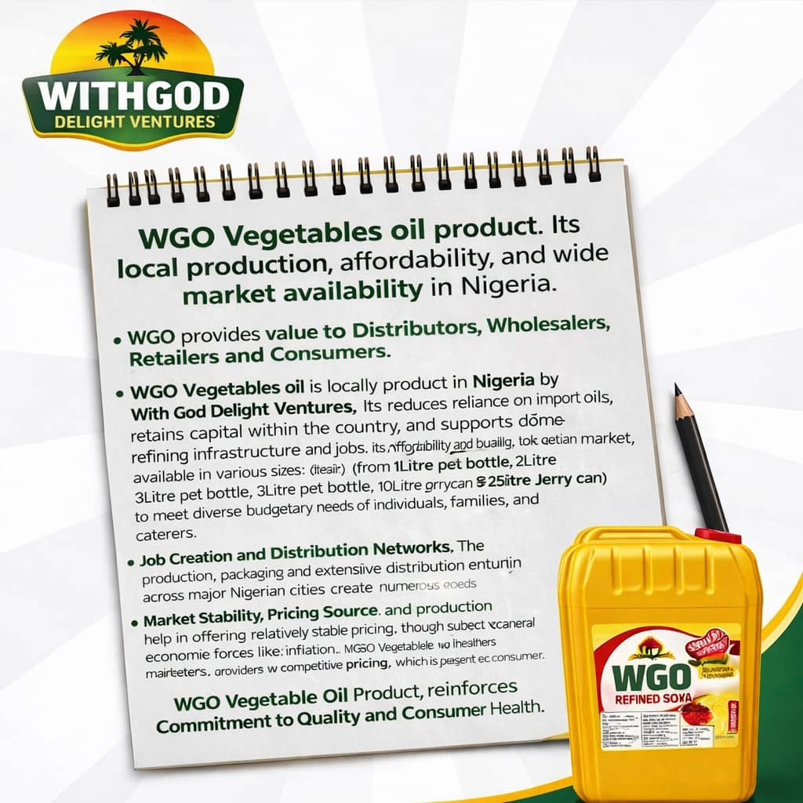
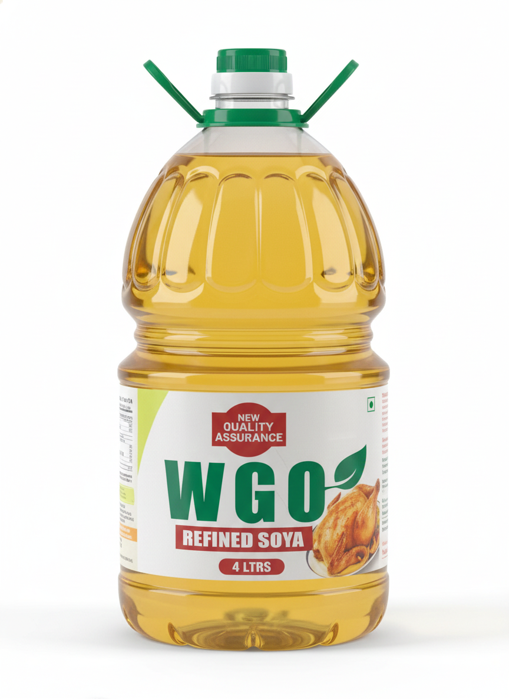
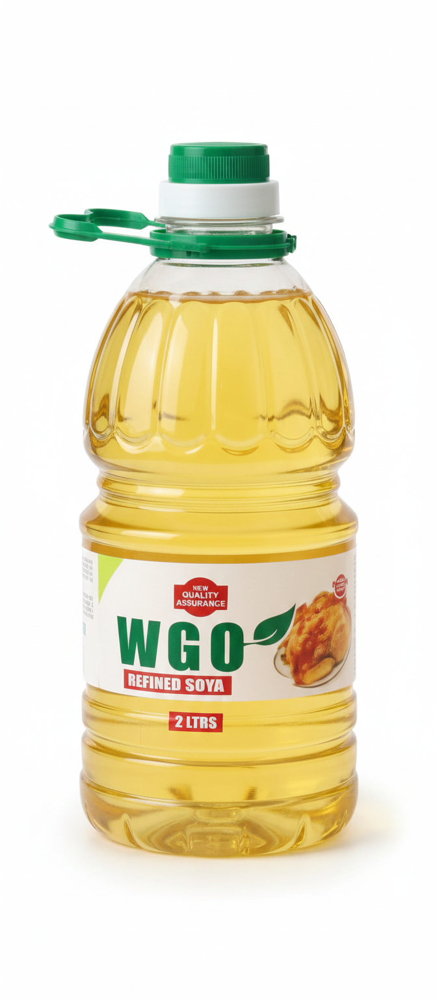

At WithGod Delight, we are committed to producing high-quality, nutritious vegetable oil that meets international standards. Our flagship product, WGO Soya Oil, is refined with care to ensure purity, taste, and health benefits.
Learn More →Carefully refined to deliver quality, nutrition, and great taste in every drop.

